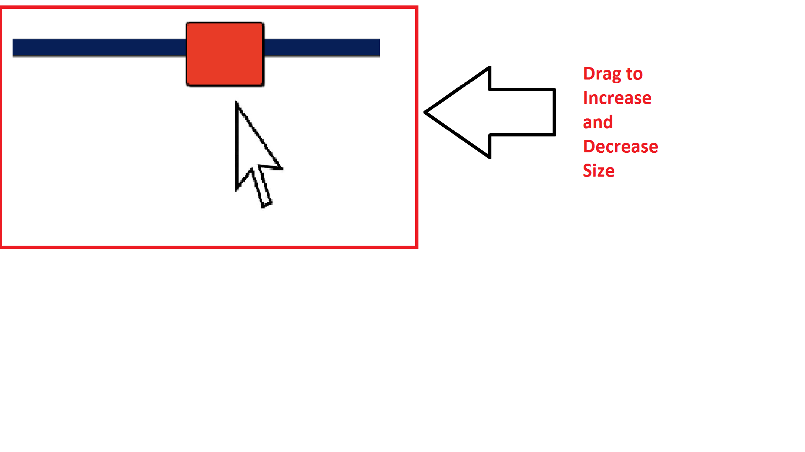
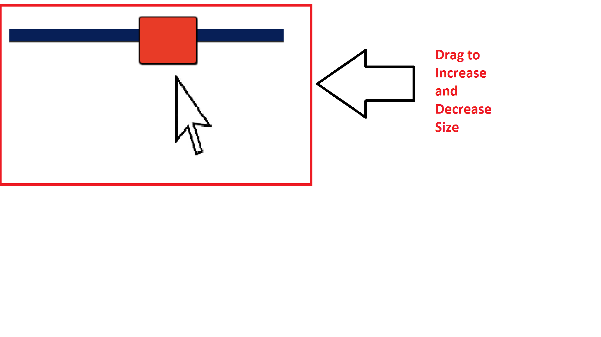

Death by 3300- Instructions
Death is inevitable. It is the one thing that is for certain that will happen to everyone in their lifetimes. Even though the consequence of death is the same for us all, people encounter death in different ways; some more painful than others.
Continue to find out what's the most destructive force of them all.
 
